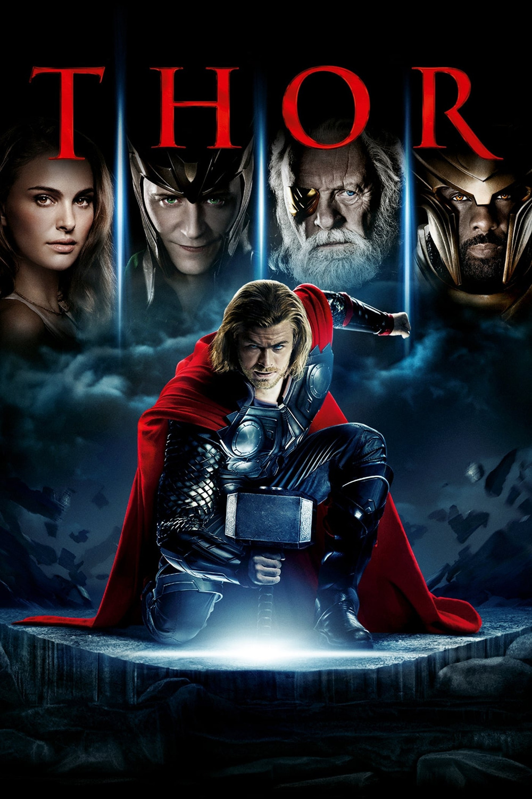

Мировая премьера: 6 мая 2011
Слоган: Мужество бессмертно.
Сюжет: Тор – могучий, но высокомерный бог грома из мистического мира Асгарда, чьи безрассудные поступки возрождают древнюю войну. В качестве наказания его отправляют в изгнание на Землю, лишив сил и вынудив жить среди обычных людей. Чтобы вернуть свои утраченные способности, Тору предстоит понять, что значит быть настоящим героем.
Режиссёр: Кеннет Брана
В основе: Комиксы о Торе (США, выходят с 1962, авторы – Стэн Ли и Ларри Либер)
Серия: Кинематографическая Вселенная Марвел
В ролях:
| Крис Хемсворт | Тор |
| Натали Портман | Доктор Джейн Фостер |
| Том Хиддлстон | Локи |
| Энтони Хопкинс | Один |
| Стеллан Скарсгард | Доктор Эрик Селвиг |
| Кэт Деннингс | Дарси Льюис |
| Кларк Грегг | Агент Фил Коулсон |
| Рэй Стивенсон | Вольштагг |
| Джейми Александр | Леди Сиф |
| Рене Руссо | Фригга |
| Колм Феоре | Король Лафей |
| Идрис Эльба | Хаймделл |
| Джош Даллас | Фандрал |
| Таданобу Асано | Огун |
| Максимилиано Эрнандес | Агент Джеспер Ситуэлл |
| Дакота Гойо | Юный Тор |
| Джереми Реннер | Клинт Бартон / Соколиный Глаз |
Бюджет: $ 150 млн.
Кассовые сборы в США: $ 181 млн.
Кассовые сборы в мире: $ 449 млн.
Продолжительность: 1 ч. 45 мин.
Рейтинг: 7.0